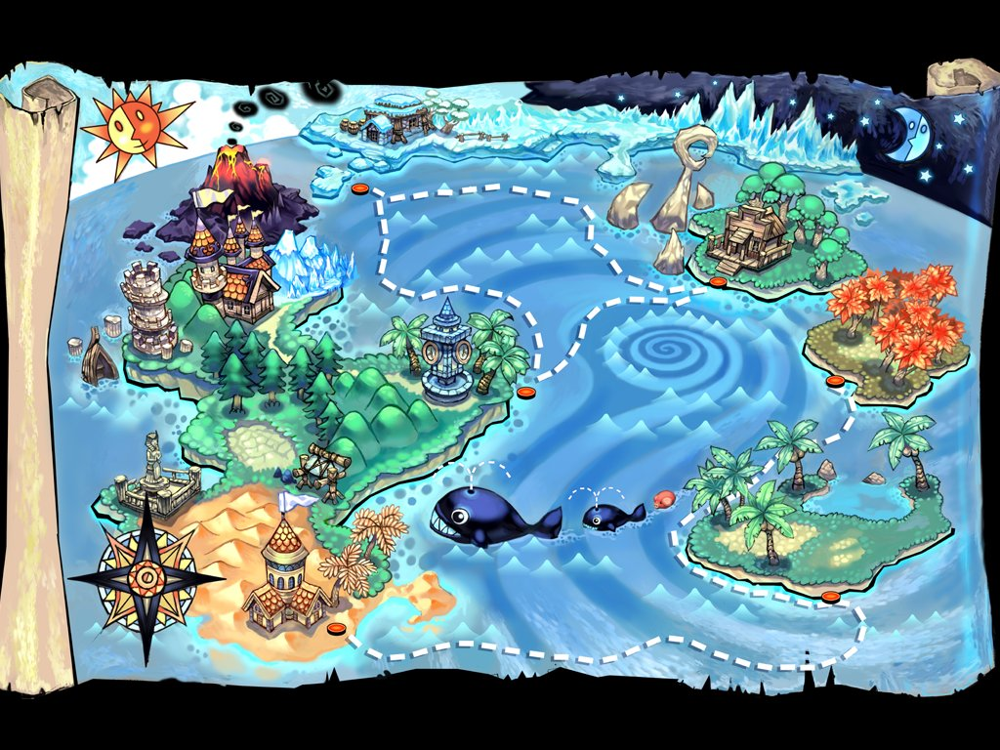

Guia Tales of Pirates
Servidor pessoal de PvE clássico, ajustado para jogar sozinho do 1 ao 100. Tudo aqui foi tirado dos arquivos do servidor e conferido com guias da comunidade.

Comece aqui
1Escolha sua classeSeis classes, cada uma com missões de troca aos níveis 9 e 40. Veja qual combina com você.Ver classes →2Siga a rotaOnde caçar, quando trocar de classe e quais dungeons fazer em cada fase, do 1 ao 100.Ver rota →3Faça gold e equipe-seStore por gold, equipamento da sua classe e as melhores formas de ganhar dinheiro por nível.Ver economia →4Entre na históriaAnimais enlouquecendo, frutas estranhas na praia e a lenda do Rei Pirata. O começo, sem spoilers.Ler a introdução →
O que muda neste servidor
EXP5x + bônus por nível
Missõesvalem de verdade
Históriareescrita
Drop3x
Nível máximo100
Bossesajustados para solo
Storecomprada com gold
Montariaem 3 níveis
Marmais tranquilo
Detalhes de cada ajuste em Regras. Coordenadas no formato do minimapa (x, y).